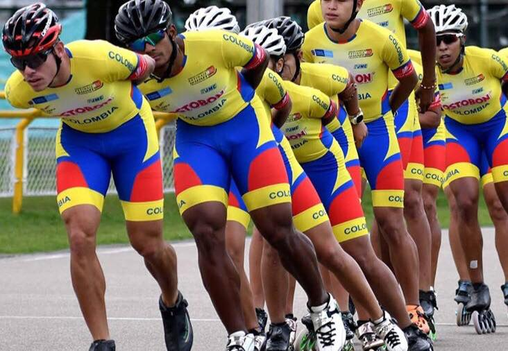
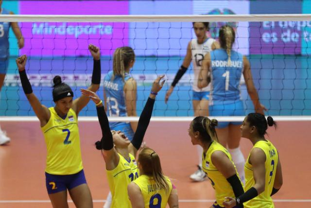

 La Federación Colombiana de Patinaje, cuya sigla es Fedepatín, es un organismo deportivo de derecho privado, sin ánimo de lucro, que apoya programas de interés público y social referentes al patinaje en Colombia. Sus principales funciones son: Fomentar, patrocinar y organizar la práctica del deporte de patinaje sobre ruedas y en hielo en sus diferentes modalidades deportivas a nivel nacional, desde su competencia técnica y administrativa1?. Al mismo tiempo, la federación es la encargada de organizar anualmente los campeonatos nacionales interclubes e interligas de las diferentes modalidades que se practican en el país. Los colores distintivos de la federación son blanco, rojo y gris. Las modalidades de patinaje establecidas dentro de la Federación Colombiana de Patinaje son: patinaje de velocidad,? patinaje artístico sobre ruedas,3? hockey sobre patines, hockey sobre patines en línea y skateboarding.4? Sin embargo, no todas las disciplinas sobre patines en Colombia están federadas en esta organización. La comunidad del roller derby decidió en el año 2016 no ser parte de Fedepatín al no darles la federación garantías para desarrollar el deporte de manera apropiada, por lo cual no es probable que Colombia envíe representantes a los World Roller Games mientras no haya una solución entre las partes.
 El voleibol surgió en 1895, en el estado de Massachusetts, en Estados Unidos, creado por William Morgan, como una alternativa de deporte para las personas mayores, que no aguantarían el contacto físico constante del baloncesto —que había sido inventado algunos años antes, en el mismo local—. Llamado primeramente Mintonette, lo rebautizaron por el movimiento de volear, o pasar la pelota al otro lado. Solo cinco años después de su creación el deporte había ya llegado a Canadá, y poco a poco se difundió por diversas partes del mundo. Sin embargo, las reglas variaban según el lugar —en una competición en Filipinas, por ejemplo, cada equipo llegó a tener 16 jugadores—. Para solucionar la cuestión, en 1918 se definieron algunas reglas universales, como el número de atletas de cada lado del campo, y que solo permitían a cada equipo tres toques en la pelota antes que cruzara la red. En los años 30, la disciplina llegó a Europa Oriental. En 1933, la Unión Soviética realizó su primer campeonato nacional, y en Checoslovaquia surgía el bloqueo, una innovación en el deporte. En 1947, se fundó la Federación Internacional de Voleibol (FIVB) que siguió con la estandarización de las reglas: determinó el tamaño del campo, 9x18 metros, y la altura de la red para el juego, 2,43 metros para los hombres y 2,24 metros para las mujeres. Dos años después, vino el primer Campeonato Mundial, en Roma.